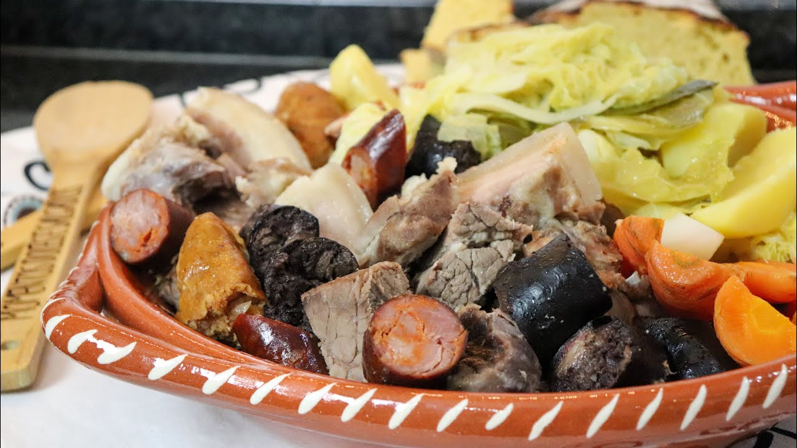

Cozido à portuguesa

One of the most famous and tradicional portuguese dishes
Ingredients:
- 200g of cow meat
- 200g of pig meat
- 300g of chicken meat
- 1 black pudding
- 150g of bacon
- 1 chorizo
- 400g of savoy cabbage
- 1 leek
- 4 potatoes
- 2 turnips
- 4 carrots
- 3 garlic cloves
Preparation
- Wash the meat well and place it in a pressure cooker
to cook for 25 minutes.
Once cooked, reserve the meat and broth.
- Wash and cut the cabbage and leeks into pieces. Wash,
peel and halve the potatoes, turnips, carrots and garlic.
Then place them in a pan.
- Add the previously cooked meat and cover halfway with water.
The other half, with the broth from the meat cooking.
- Cook covered for 15 minutes, or until vegetables are cooked through.
- Remove meat and cut into pieces.
- Place meat and vegetables on a wide platter and serve.
- Serve with white rice
cooked in the remaining meat broth.